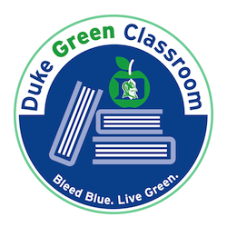

Course Overview
Statistical models are necessary for analyzing the type of multivariate (often large) datasets that are usually encountered in data science and statistical science, and hierarchical models often play a vital role in many of those applications. This is a graduate-level course that introduces students to the building blocks of hierarchical modeling and provides students with the tools needed to build, fit and interpret hierarchical models.
Hierarchical or multilevel models provide a principled way to model naturally grouped or clustered data, in a way that takes advantage of the relationship between observations in the same group, but also allows for borrowing of information across the groups. In this course, you will be introduced to these models, with particular emphasis on the theoretical and conceptual foundations, as well as implementation, model fitting, and interpretation of the results.
This course emphasizes the mathematical theory behind hierarchical models, as well as real data analyses, including interpretation of results. All students must have the theoretical background covered in the prerequisites (in particular, in the context of Bayesian statistics) to be able to keep up with and understand the materials.
Learning Objectives
By the end of this course, students should be able to
- Understand the foundations and general structure of both classical and Bayesian hierarchical models.
- Specify and fit hierarchical models to various types of grouped or clustered data.
- Use the models covered in class to analyze real data sets.
- Assess the adequacy of hierarchical models to any given data and make a decision on what to do in cases when certain models are not appropriate for a given dataset.
Course Info
Meeting Times
Mondays and Wednesdays (1:45 - 3:00pm)
Perkins Link 071 (Classroom 5).
Labs
Fridays (1:45 - 3:00pm)
Perkins Link 071 (Classroom 5).
Teaching Team and Office Hours
| Instructor | Dr. Olanrewaju Michael Akande | Mondays and Thursdays (9am - 10am) | Zoom Meeting ID: See Sakai | |
| TAs | Chengxin Yang | Tuesdays (1pm - 2pm) and Thursday (6pm - 7pm) | Zoom Meeting ID: See Sakai | |
| Alessandro Zito | Wednesdays (10am - 11am) and Fridays (8:30am - 9:30am) | Zoom Meeting ID: See Sakai |
Texts
| Lecture Notes on Hierarchical Modeling | Peter D. Hoff | Required (available on Sakai; not to be shared publicly) |
| Data Analysis Using Regression and Multilevel/Hierarchical Models | Gelman A., and Hill, J. | Recommended |
Materials
Lecture notes and slides, lab exercises and assigned readings will be posted on the course website. We will closely follow the main text so students must always read the corresponding chapters in the assigned readings.
Important Dates
| Monday, August 23 | Fall classes begin |
| Friday, September 3 | Drop/Add ends |
| Monday, September 6 | Labor day. Classes in session |
| Wednesday, September 27 | Exam I (tentative) |
| Sunday, October 17 | Case Study I reports due (tentative) |
| Monday, November 15 | Exam II (tentative) |
| Tuesday, November 23 | End of semester |
| Thursday, December 9 | Case Study II reports due (tentative) |
Green Classroom
 This course has achieved Duke’s Green Classroom Certification. The certification indicates that the faculty member teaching this course has taken significant steps to green the delivery of this course. Your faculty member has completed a checklist indicating their common practices in areas of this course that have an environmental impact, such as paper and energy consumption. Some common practices implemented by faculty to reduce the environmental impact of their course include allowing electronic submission of assignments, providing online readings and turning off lights and electronics in the classroom when they are not in use. The eco-friendly aspects of course delivery may vary by faculty, by course and throughout the semester. Learn more at https://sustainability.duke.edu/action/certification.
Acknowledgement
This web page contains materials such as lecture slides, homework assignments, and datasets developed or adapted by Dr. Amy H Herring.